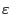
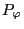

The time change rate of
 and
 is given respectively
by Eqs. (35) and (52), i.e.,
From Eqs. (54) and (55), we know that the energy
is conserved for motion in time independent field while
is conserved for motion in toroidal symmetrical field. For the
motion in a toroidal symmetrical equilibrium field superposed by a coherent
perturbation
with
, neither of
and
is conserved. In
this case we can construct a new conservative quantity by combining
and
. Define
then it is easy to verify that
when including only
the contribution of the perturbation up to the order
 .
.
YouJun Hu
2014-05-19